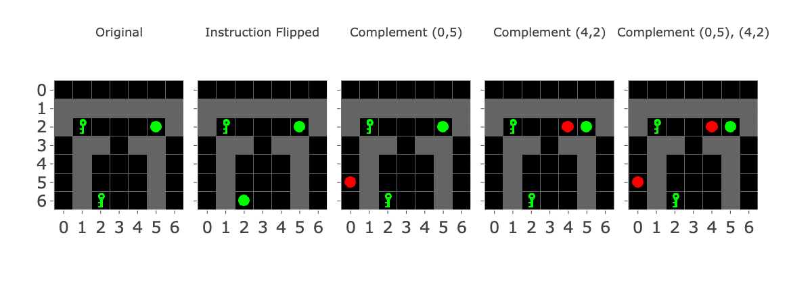
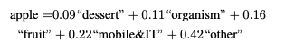

TL;DR
We analyse the embedding space of a gridworld decision transformer showing that it has developed extensive structure which reflects properties of the model, the gridworld environment and the task. We’re able to extract features and corresponding linear feature representations. Finding that one of these feature representations is present in many different embeddings, we predicted several adversarial inputs (observations with “distractor” items) that trick the model about what it is seeing. We show that these adversaries work as effectively as changing the feature (in the environment), but that we can also intervene directly on the underlying linear feature representation to achieve the same effects. Whilst methodologically simple, this analysis shows that mechanistic investigation of gridworld models are tractable and may support fundamental mechanistic interpretability research and its application to AI alignment.
For readers short on time, we recommend reading the following sections:
- Read the Introduction sections on the task and observation embeddings.
- Read the section describing extraction of the via pca.
- Read the results sections describing using adversaries to change the instruction feature and comparing adversaries to direct intervention.
Key Results
Object Level Results
-
We show that our observation space has extensive geometric structure.
- We think this structure is induced by properties of experimental set up (partial observations), architectural design (compositional embedding schema) and nature of the RL task.
- The learned structure included the use of clustered embeddings and antipodal pairs.
- We see examples of isotropic and anisotropic superposition.
-
We identify interpretable linear feature representations in MemoryDT’s observation embedding space.
- We find that Principal Component Analysis of a subset of embedding vectors produces vectors that linearly classify the input space according to task relevant concepts.
- We find that the underlying features appear “smeared” across many embeddings which we interpret as a form of equivariance.
-
We causally validate one of these features, the “instruction feature” using adversarial inputs/embedding arithmetic and direct interventions.
- It’s easy to break models trained on simple tasks, but our adversaries are targeted, directly flipping the models' detection of the learned feature.
- The prediction behind our adversaries also included an arithmetic component which we validated, enabling us to relate our results to arithmetic techniques used to generate steering vectors.
- For rigour and completeness, we use direct intervention on the feature to show that it is causal.
- Lastly, we confirm that the adversarial inputs transfer to a different model trained on the same data indicating consistent with our adversary working via a feature not a bug.
WIP: Broader Implications
- Features Stuff:
- My work shows that an architectural approach to interpretability can be valuable, even without eliminating polysemanticity.
- We add to a body of evidence suggesting that intervening on features may be akin to changing what a model "believes" which would be an incredibly powerful tool for evals.
- Applied Stuff
- We're able to propose a testable hypothesis around how adversarial prompts work to jailbreak language models.
- The results here make it easier to understand/study the phenomenology of steering vectors.
- We see elements of toy model, vision and language model phenomena (which is interesting from the perspective of unifying interpretability work at different scales/modalities).
- DIs trained on toy models are a useful playground for the study of related phenomena in language models, because we can see similar ideas crop up in different contexts.
Introduction
Why study GridWorld Decision Transformers?
Decision Transformers are a form of offline RL (reinforcement learning) which enable us to use Transformers to solve traditional RL tasks. While traditional “online” RL trains a model to receive reward by completing a task, offline RL is analogous to language model training with the model being rewarded for predicting the next token.
Decision Transformers are trained on recorded trajectories which are labelled with the reward achieved. Reward-to-Go (RIG). RIG is the time-discounted reward stream that the agent should be getting, i.e., if it’s set close to 1 then the model will be incentivised to do well, because it will be taking actions consistent with the reference class of other agents which got this reward. RIG isn’t critical to this post, but will be discussed in more detail in subsequent posts.
We’re interested in gridworld decision transformers for the following reasons:
- Decision Transformers are smaller/simpler to the language models we want to understand and align. Decision Transformers are transformers, the training trajectories operate a lot like a training corpus and RIG works a lot like an instruction/goal prompting. It may be the case that various phenomena associated with large language models are also present in these models and can be studied.
- We might be able to study alignment relevant phenomena in decision transformers. Previous work has studied alignment relevant phenomena (such as goal misgeneralization) in the absence of interpretability, or with non-transformer architectures. Decision transformers are more analogous to pre-trained language models or instruction-tuned language models by default, but we could conceivably train them with online learning analogous to RLHF.
- We’re working with gridworld tasks because they’re simpler and easier to write. Gridworld RL tasks have been used to study alignment relevant properties in the past and we’re able to avoid training convolutional layers to process images which speeds up training.
AI Alignment and the Linear Representation Hypothesis
The linear representation hypothesis proposes that the neural networks represent features of the input as directions in latent space.
This post focuses on linear representations for 3 reasons:
- The Linear Representation Hypothesis seems likely to be true. Evidence on many fronts suggest that some version of the linear representation hypothesis holds. Also, recent publications show evidence that is possible to find and interpret linear representations in the residual stream. Therefore, it's likely that MemoryDT and other gridworld / decision transformers will make use of linear representations.
- The Linear Representation Hypothesis seems likely to be useful. If the linear representation hypothesis is true and we're able to find the corresponding directions in deep neural networks, then we may be able to read the thoughts of AI systems directly. Such a feat would not only be step one in retargeting the search, but a huge win for interpretability and many other alignment agendas. Showing that we can retarget the search on MemoryDT is one of various win-scenarios for our work.
- Our results seem interesting from the perspective of superposition, a phenomena which represents a significant obstacle in interpretability. Previously, it was thought that finding meaningful directions in a residual stream would be very difficult due to superposition / entanglement (the property whereby linear features are represented in shared dimensions). Results from recent work with sparse autoencoders found interpretable features which clump together in groups (anisotropic superposition) as opposed to repelling and spreading as far as possible (isotropic superposition).
The MiniGrid Memory Task
MemoryDT is trained to predict actions in trajectories produced by a policy that solves the MiniGrid Memory task. In this task, the agent is spawned next to an object (a ball or a key) and is rewarded for walking to the matching object at the end of the corridor. Due to partial observability, the instruction can’t be seen without facing it. Figure 1 shows all 4 variations on the environment. We refer to the first object as the “instruction” and the latter two objects as the “targets”. The action space is made up of the actions “Left”, “Right” and “Forward” along with 4 other actions not useful in this environment.

Figure 1: MiniGrid Memory Task Partial Observations. Above: All 4 Variations of the MiniGrid Memory Task as seen from the starting position. Below: A recording of high performing trajectories.
This task is interesting for 3 reasons:
- The optimal policy is well described as learning a simple underlying algorithm described by the boolean expression A XOR B. The optimal trajectory shown in figure 1 involves walking forward 4 times, and turning left or right, followed by forward. However, labelling the instruction and target as boolean variables, the optimal policy is turn left if A XOR B and right otherwise. The XOR operation is particularly nice for interpretability since it is symmetric in A and B, and changing A or B will always change the correct decision. Therefore, all beliefs about the instruction/targets should be action guiding.
-
Observations generated in this task include redundant, correlated and anti-correlated features, encouraging the use of abstractions. The gridworld environment makes this true in many ways:
- The target configuration is detectable via the left or right position alone or via any one observation in a trajectory.
- The presence of a key at a position implies the absence of a ball at the same position (hence instructions/targets becoming binary variables).
- Since the instruction does not change mid-episode, observations of the same object are redundant between observations.
- A partially observable environment forces use of the transformer’s context window. The optimal trajectory involves only seeing the instruction once, forcing use of the context window. This is important since it adds complexity which justifies the use of a transformer, which we are interested in studying.
Figure 2 shows how the decision transformer architecture interacts with the gridworld observations and the central decision. We discuss tokenization of the observation in the next section.
Figure 2: Decision Transformer Diagram with Gridworld Observations. R corresponds to the tokenized Reward-to-Go, S stands in for state (replaced with O in practice we have partial observations). A corresponds to actions tokens.MemoryDT Observation Embeddings are constructed via a Compositional Code.
In order to adapt the Decision Transformer architecture to gridworld tasks we tokenize the observations using a compositional code whose components are “objects at (x,y)” or colour at (x,y). For example, Key at (2,3) will have its own embedding and so will Green (2,3) etc. Figure 3 shows example observations with important vocabulary items shown.
For each present vocabulary item, we learn an embedding vector. The token is then the sum of the embeddings for any present vocabulary items:
Where \( o_t \) is the observation embedding (which is a vector of length 256), \( i \) is the horizontal position, \( j \) is the vertical position, \( c \) is the channel (colour, object or state), and \( f_{i,j,c} \) is the corresponding learned token embedding with the same dimension as the observation embedding. \( I(i,j,c) \) is an indicator function. For example \( I(2,6, \text{key}) \) means that there is a key at position (2,6).
Figure 4 Illustrates how the observation tokens are made of embeddings, which might themselves be made of features, which match the task relevant concepts.
Figure 4: Diagram showing how concepts, features, vocabulary item embeddings and token embeddings are related. We learn embeddings for each vocabulary item but the model can treat those independently or use them to represent other features if desired.
A few notes on this setup:
- Our observation tokenization method is intentionally linear and is therefore decomposable into embeddings (which are linear feature representations). By constructing it like this we make it harder for the model to memorise the observations since it must create them from a linear sum of fundamentally (more) generalising features. Furthermore, the function A XOR B can’t be solved using a linear classifier stopping the model from solving the entire task in the first observation.
- Our observation tokenization method is compositional with respect to vocabulary items but not task relevant concepts. The underlying “instruction feature” isn’t itself a member of the vocabulary.
- The task-relevant concepts have a many-to-many relationship with vocabulary items. There are different positions from which the instruction/targets might be seen.
- Some vocabulary items are much more important for predicting the optimal action than others. Keys/Balls are clearly more important, and especially so at positions from which the instruction/targets are visible.
- Vocabulary item embeddings will have lots of correlation structure due to partial observability of the environment.
Results
Geometric Structure in Embedding Space
In order to determine whether MemoryDT has learned to represent the underlying task-relevant concepts, we start by looking at the observation embedding space.
Many embeddings have much larger L2 norms than others.
Channels likely to be activated and likely to be important to the task such as keys/balls appeared to have the largest norms, along with “green” and other channels which may encode useful information. Some of the largest embedding vectors corresponded to vocabulary items that were understandable important such as Ball (2,6), the ball as seen from the starting position, whilst others were less obvious Ball (0,6) which shouldn’t appear unless the agent moves the ball (it can do that). Embedding vectors are initialised with L2 norms of approximately 0.32, but these vectors weren’t subject to weight decay and clearly some grew during training.
Figure 5: Strip Plot of L2 Norms of embedding vectors in MemoryDT’s Observation Space.Cosine Similarity Heatmaps reveal Geometric Structure
We initially attempted PCA / U-Map for dimensionality reduction, however neither were particularly informative. However, we were able to borrow the concept of a clustergram from systems biology. The idea is to plot a heatmap of the adjacency matrix, in this case the cosine similarity matrix of the embeddings and reorder rows according to a clustering algorithm. The resulting cosine similarity heatmaps were interesting with and without reordering of rows for clustering (Figure 6).
Figure 6: Cosine Similarity Heatmap of Embeddings for Key/Ball Channels. LHS: Order of rows/columns is determined by descending order given channel, y-position, x-position. The first row is Key (0,0), the next is Key (0,1) and so forth. RHS: Order of rows/columns is determined by agglomerative clustering. Figure 6 is best understood via interactions (zooming/panning).There were a number of possible stories which might explain the structural features observed in Figure 6. Many embeddings clearly don’t have very high cosine similarity with any others. These were the embeddings with low norms and weren’t updated much or at all during training. There were two effects which may be interpreted with respect to correlation or anti-correlation:
There were a number of possible stories which might explain the structural features observed in Figure 6. Many embeddings clearly don’t have very high cosine similarity with any others. These were the embeddings with low norms and weren’t updated much or at all during training. There were two effects which may be interpreted with respect to correlation or anti-correlation:
- Spatial Exclusivity/Anti-correlation was associated with antipodality: Without reordering, we can see off-center lines of negative cosine similarity which correspond to keys/balls at the same positions. This may suggest that the mutual exclusivity of keys/balls at the same position induced anti-correlation which led to antipodality in these representations.
- Correlated Vocabulary items had higher cosine similarity: Some vocabulary items have particularly high cosine similarity with each other. For example, vocabulary items associated with one variation of the target configuration as seen from the starting position: key (1,2) and ball (5,2).
To address these ideas more directly, we plotted cosine similarity as a function of whether the two vocabulary items shared the same channel (key or ball) or position (Figure 7).
Figure 7: Distribution of Cosine Similarity of pairs of embeddings/vocabulary items (limited to Key/Ball channels), filtered to have L2 norm above 0.8.Even though channel/position are not a perfect proxy for correlation beyond the anti-correlation induced by spatial exclusivity, Figure 7 shows some general trends better than Figure 6. Beyond potentially interesting trends (which aren’t trivial to interpret), we can see many outliers who embedding directions relative to each other can’t easily be interpreted without reference to the training distribution.
This leads us to the hypothesis that semantic similarity may also be affecting geometric structure. By “semantic similarity”, we mean that maybe some vocabulary items may be related not just by when they are likely to occur, but by the actions which the decision transformer should make having observed them. To provide evidence for such a hypothesis, we focus on groups of vocabulary items with particularly absolute cosine similarity and clusters. For example, we observed clusters corresponding to vocabulary items in a single channel at multiple positions such as Keys at (0,5), (2,6) and (4,2). Interpreting these clusters was possible with reference to the training distribution, specifically, look at which positions the agent might be in when those channels activated (Figure 8).
 Figure 8: Reference Observations to assist interpretation of Feature Maps. Agent is always in position (3,6).
Figure 8: Reference Observations to assist interpretation of Feature Maps. Agent is always in position (3,6).
By combining the clusters observed in Figure 8 with the distribution of possible observations in the training dataset, it's possible to see several semantically interpretable groups:
- Targets seen from the end-of-corridor and the “look-back” position. These included Keys and Balls at (1,6) and (5,6).
- Targets as seen from the start. These included Keys and Balls at (1,2) and (5,2).
- Instructions as seen from various positions: These include: Start -> (2,6), Look-Back -> (4,2) (4,3), Early Turn 1, 2 -> (1,5), (0,5).
At this point, we hypothesised that each of these groups of vocabulary items may contain underlying linear features corresponding to the semantic interpretation of the group.
Extracting and Interpreting Feature Directions in MemoryDT’s Observation Embeddings
To extract each feature direction, we perform feature extraction via Principal Component Analysis on the subset of relevant embedding vectors. By using PCA we hope to throw away unimportant directions while quantifying the variance explained by the first few directions. We can attempt to interpret both the resulting geometry of the PCA and the principal component directions themselves.
To interpret the principal component directions, we show heatmaps of the dot product between the PC and each embedding vector, arranging these values to match the corresponding positions in the visualisations of gridworld partial observations. These heatmaps, which I call “feature maps”, have much in common with heatmaps of convolutional layers in vision models and represent virtual weights between each embedding the underlying principal component.
The Primary Instruction Feature
Figure 9: Exploratory Analysis of the “Instruction” subset of Observation Embeddings. Left) Cosine Similarity Heatmap of the Instruction Embeddings. Right) 2D Scatter Plot of the first 2 Principal Components of a PCA generated from the embedding subset.
Previously, we identified that keys/balls at positions (4,2), (4,3), (0,5) and (2,6) as clustering and hypothesised that this may be due to an underlying “instruction feature”. The first 2 principal components of the PCA explain 85.12% of the variance in those embeddings and the first two dimensions create a space in which keys/balls appear in antipodal pairs (Figure 9). This projection is reminiscent of feature splitting/anisotropic superposition which is thought to occur when highly correlated features have similar output actions and antipodality found in toy models.
Clearly, PC1 separates keys from balls independently of position, making it a candidate for a linear representation of an instruction feature. One way to interpret this is a very simple form of equivariance, where each vocabulary item is an (in-built, not learned) feature detector akin to a neuron firing only when the feature is present.
To visualise this instruction feature, we generate a feature map for PC1 (Figure 10), which shows that this feature is present to varying degrees in embeddings for keys/balls at many different positions where the instruction might be seen. We note that the instruction feature tends to be present at similar absolute values but opposite signs between keys and balls suggesting a broader symmetry in the instruction feature between keys and balls.
Figure 10: Feature Map showing Instruction PC1 Values for all embeddings corresponding to Keys/Ball.Another Instruction Feature?
PC2 in the Instruction subset PCA is less easy to interpret. Figure 9 appears to distinguish whether the has been identified from “look-back” and “starting” positions. However, it appears to “flip” the effect it has for embeddings which correspond to “instruction is key” vs “instruction is ball”. Moreover, the feature map for PC2 (Figure 11) shows keys and balls at (3,4) as having noticeable cosine similarity with this direction which doesn’t fit that interpretation. Nor does this explanation predict that keys/balls at (4,3), a position similar to the look-back feature barely projects onto PC2.
One explanation might be that because PCA finds orthogonal directions, it fails at finding a second interpretable feature direction.
Figure 11: Feature Map showing Instruction PC2 Values for all embeddings corresponding to Keys/Ball.Target Features
Figure 12: Exploratory Analysis of the Target Embeddings.Left: Cosine Similarity Heatmap of the Target Embeddings. Right: 2D Scatter Plot of the first 2 Principal Components.
For the target feature, we identified two separate clusters each made up of two sets of almost antipodal pairs (Figure 12). The geometry here is much closer to isotropic superposition / toy model results. The faint-checkerboard pattern suggests the slightest hint of a more general target feature which we suspect may be learnt if we trained MemoryDT for long enough.
The first two principal components of the resulting PCA explain 83.69% of the variance in those embeddings and produced interpretable feature maps (Figure 13):
- Starting Target Feature: PC1 can be interpreted as reflecting the configuration of the targets as seen from the starting position \( (1,2) \) and \( (5,2) \). There's slight evidence that targets seen at intermediate positions while walking up to the targets \( (1,3) \) and \( (1,4) \).
- End Target Feature: PC2 can be interpreted as reflecting the configuration of the targets as seen from the end of the corridor position \( (1,2) \) and \( (5,2) \).
Using Embedding Arithmetic to Reverse Detected Features
Embedding Arithmetic with the Instruction Feature
We previously observed that the group of vocabulary items associated with the instruction concept were separated cleanly into Keys and Balls by a single principal component explaining 60% of the total variance associated with 6 vectors included. From this, we hypothesised that this principal component reflects an underlying “instruction feature”. To validate this interpretation, we want to show that we can leverage this prediction in non-trivial ways such as by generating adversarial examples.
Based on the previous result, we predicted that if we added two vocabulary items matching the opposite instruction (ie: if the instruction is a key, seen at (2,6), we can add a ball to (0,5) and a ball to (4,2)) and this would induce the model to behave as if the instruction were flipped. I've drawn a diagram below to explain the concept (Figure 14).
 Figure 14: Diagram showing the basic inspiration behind “instruction adversaries”.
Figure 14: Diagram showing the basic inspiration behind “instruction adversaries”.
Effectiveness of Instruction Feature Adversaries
Figure 15: Animation showing the trajectory associated with the Instruction Reversal Experiment.
To test adversarial features / embedding arithmetic hypothesis, we generated a set of prompts/trajectories ending in a position where the model’s action preference is directly determined by the observation of the instruction being a key/ball (Figure 15). For each of the target/instruction configurations in Figure 15, we generate 5 different edits (Figure 14) to the first frame:
- The original first frame: This is our negative control.
- S5 with the instruction flipped: This is our positive control. Changing the instruction from a key to a ball or vice versa at S5 makes the model flip its left/right preference.
- S5 complement* instruction added at (0,5). We expect this to partially reduce the left-right preference but not flip it. (Unless we also removed the original instruction)
- S5 with the complement instruction added at (2,4). Same as the previous one.
- S5 with the complement instruction added at (0,5) and (2,4). Even though this frame was not present in the training data, we expect it to override the detection of original instruction.
Note that due to the tokenization of the observation, we can think of adding these vocabulary items to the input as adding adversarial features.
Note: I’m using the word “complement” because if the original instruction was a key, add a ball to reverse it and vice versa.
Figure 16: Adversarial Observation Token Variations. Added objects are shown red though only the object embedding is added.
Figure 17 shows us the restored logit difference for each of the three test cases Complement (0,5), Complement (4,2) and Complement (0,5), (4,2) using the original frame as our negative control or “clean” input and Instruction Flipped as our “corrupt”/positive control.
Figure 17: Restored Logit Difference between left/right for instruction feature adversaries in scenario 1. (MemoryDT). 8 facet images correspond to each target, instruction and RTG combination. (RTG = 0.892 corresponds to the highest possible reward which an optimal policy would receive. RTG = 0 corresponds to no reward, often achieved by going to the wrong target)
These results are quite exciting! We were able to predict very particular adversaries in the training data that would cause the model to behave (almost) as if it had seen the opposite instruction and did so from the feature-map (an interpretability tool).
Let's break the results in Figure 17 down further:
- Adding two decoys isn't as effective as reverse the original instruction. We expected that adding two “decoy” instructions will work as well as flipping the original instruction but the best result attained is 0.92 and most results are around 0.80-0.90.
- Adding a single decoy isn't consistently additive. If the effects were linear, we would expect that adding each single decoy would restore ~half the logit difference. This appears to be roughly the case half the time. If the effect was non-linear and we needed both to achieve the result, adding each alone would achieve a negligible effect. This also happens in some cases.
- The effect of individual decoys should be symmetric in their effects under our theory but they aren’t always. In the case of Ball, Ball-Key at RTG 0. Adding a key at (0,5) alone achieves 0.43 of the logits difference of both complements but adding a key at (4,2) achieves 0.03.
Proving that Instruction Feature Adversaries operate only via the Instruction Feature.
Whilst the previous results are encouraging, we would like to provide stronger evidence behind the notion that the projection of the embedding space into instruction feature direction is causally responsible for changing the output logits. To show this we provide two lines of evidence:
- We show that the adversarial inputs are genuinely changing the presence of the instruction feature.
- We show that we can directly intervene on the instruction feature to induce the same effects as the adversaries or flipping the instruction.
The adversarial inputs are genuinely changing the presence of the instruction feature
For each of the forward passes in the experiment above, we plot the dot product of the instruction feature with the observation embedding against the difference between the logits for turning left and right (Figure 18). We see that:
- The dot product of the instruction feature with the observation embedding ranges from about -2 to 2 in each scenario.
- Complement (0,5), (4,2) isn’t projecting as strongly into the instruction feature direction as the Instruction Flipped observation. This may explain why our restored logit differences weren’t stronger before. We weren’t flipping the instruction feature hard enough.
- Whilst flipping the sign on the instruction feature flips the action preference in most cases. However, it fails to do so when the target configuration is “Key-Ball” and R1TG = 0.892. We think that MemoryDT mostly wants to predict “A XOR B” at high R1TG and its complement at low R1TG, but it doesn’t quite do this. This will be discussed in later posts.
Direct Interventions on the Instruction Feature
We directly intervene on the instruction feature on the instruction feature in each of the scenarios tested above, again plotting the logit difference for the final left minus right direction (Figure 19).
This similarity in the functions mapped by the adversarial intervention (Figure 18) and the direct intervention are striking! They show a very similar functional mapping from the instruction feature sign/magnitude to the logit difference suggesting the instruction feature entirely explains our adversarial results.
Figure 19: Intervened Instruction PC0 direction (x-axis) and showing the logit difference between left / right (y-axis).
Do the Instruction Feature Adversaries Transfer?
Finally, since our explanation of the instruction feature suggests that it represents a meaningful property of the data and that our embedding arithmetic can be interpreted as adversaries, it is reasonable to test if those adversaries transfer to another model trained on the same data. MemoryDT-GatedMLP is a variant of MemoryDT which is vulnerable to the same adversarial features (Figure 20).
Figure 20: Restored Logit Difference between left/right for instruction feature adversaries. MemoryDT+GatedMLP (RTG = 0.892).
Figure 20 suggests the following:
- Reversing the instruction feature was more effective. The effect of adding two keys or two balls to flip the instruction was closer to the effect of flipping the original instruction and in some cases exceeded it.
- Inconsistent effect sizes and asymmetric effect sizes also appeared. As with MemoryDT, single complements varied in the strength of their effect on the logit difference and the same case of Ball, Ball-Key RTG 0 showed an effect for adding a key at (0,5) was more effective than adding a key at (4,2).
Since MemoryDT+Gated MLP is a fairly similar model to MemoryDT, it's not particularly surprising that the adversaries transfer.
Discussion
Feature Representations in GridWorld Observation Embeddings
Reasoning about MemoryDT’s Observation Embeddings
There are a number of ways to explain our results and connect them to previous work. At the broadest level, it’s not surprising to see structure in our embeddings. Highly structured embeddings have been previously linked to generalisation and grokking in toy models and the presence of composable linear features in token embeddings has been known for a long time.
Moreover, there’s a fairly simple story which can be told to explain many of our observations:
- Our observation embeddings correspond to features (like a ball at (0,5)) at some level of abstraction in the gridworld/task. A symbolic representation shortcuts the process whereby a convolutional model would first detect a ball at (0,5) with our chosen architecture.
- These embedding-features had non-trivial patterns of cosine similarity due to partial observability and spatial restraints as well as correlation induced by the specific task. That correlation meant that frequently occurring vocabulary items tended to have embedding vectors that were larger and either aligned or antipodal with other vectors as determined by similar effects to those studied in Anthropic’s Toy Models of Superposition investigation.
- However, clearly features like ball (0,5) don’t correspond directly to the most useful underlying concepts, which we think are the instruction and “targets”. Thus the model eventually learned to assign directions that represent features like “the instruction is a key” and since these were representing binary variables, MemoryDT made use of antipodal representations for the observations pertaining to instruction/target vocabulary items.
- We then saw different variations on the relationship between the embeddings and the representations of higher level features:
- For the instruction feature, we saw embeddings with pairs of antipodal embedding with high cosine similarity. PCA of these embeddings suggests underlying geometry similar to anisotropic superposition. It seems possible, but unclear whether lower order principal components were meaningful there, but clear that the first component is a meaningful feature that is present in many different embeddings.
- For the target features, we saw two features (possibility with some overlap) representing the targets as seen from different positions in close to isotropic superposition.
WIP: Intervening in the World Model as a type of Eval Tool
Previous work with adversaries and embeddings: Transformer visualization via dictionary learning: contextualized embedding as a linear superposition of transformer factors
More theoretically, my results add to a body of evidence suggesting that intervening on features may be akin to changing what a model "believes" which would be an incredibly powerful tool for evals. This is a bit subtle but my interventions make the model act as if a particular fact was different. This is very different from just making one action more likely. To apply this, imagine you finetune your model to the point where you can't jailbreak it anymore but want to keep going, making it even more unlikely for the model to ever take hostile or power-seeking actions. One way to do this is to use latent perturbations. Intervene on features to simulate if the model had been jailbroken and then make it so even that wouldn't work. This could be honeypotting on steroids. Not just useful because you can create situations you might not know how to prompt yourself into, but might be a much more efficient way to explore the space of "states of mind the AI could be in" rather than "situations it could be in".
However, many pertinent questions are still unanswered:
- To the extent that some embeddings were represented almost antipodally, why weren’t more antipodal? It could be the model was simply undertrained or there could be more to it.
- How precisely do the feature directions representing the instructions or target formation end up present in so many different embeddings? Did the instruction feature first form in association with more frequently observed vocabulary items and then undergo a phase change in which they spread to other embeddings or was it more continuous?
- What are the circuits making use of each of these features? Can we understand the learned embedding directions better with reference to the circuits that make use of them or by comparing the directions we find to optimal causal directions?
Adversarial Inputs
To validate our understanding of the instruction feature, we used both adversarial inputs as well as direct intervention on the instruction feature. We were able to correctly predict which embeddings could be used to trick the model and show that this effect was mediated entirely via the feature we identified.
Adversaries and Interpretability
In general, our results support previous arguments that study of interpretability and adversaries are inseparable. However, previous results connect adversarial robustness to interpretability whereas this seems not to apply here. That the instruction feature was present in the embeddings of so many vocabulary items was both the reason we were able to interpret it and the reason it wasn't adversarially robust. Rather, MemoryDT used a coherent, interpretable strategy to detect the instruction from lower level features that made it vulnerable to adversarial, out-of-distribution inputs. Moreover, in order to be robust to the adversaries we designed and still perform well on the original training distribution, we would predict that MemoryDT would need to implement more complicated circuitry/representations that would be less interpretable.
One possible explanation is that adversarial robustness may be generally associated with crisper abstractions which favour interpretability but robustness to adversaries which deliberately break with simpler abstractions may not. This may be important to future interpretability in the gridworld context as we could study our ability to interpret models like MemoryDT after training them to be adversarially robust to such examples.
Adversaries and Superposition
There are many reasons to think that adversaries are not bugs, they are features. However, it has been suggested that vulnerability to adversarial examples may be explained by superposition. The argument suggests that unrelated features in superposition can be adversarially perturbed, confusing the model, which would fit into the general category of adversaries as bugs.
However, this was suggested in the context of isotropic superposition and not anisotropic superposition. Isotropic superposition involves feature directions which aren't representing similar underlying objects sharing dimensions whilst anisotropic superposition may involve features that “produce similar actions” (or represent related underlying features).
There are 2 mechanisms through which anisotropic superposition might be related to adversaries:
- Features in anisotropic superposition are more likely to be mistaken for each other and targeted adversarial attacks exploit this. Humans and convolutional neural networks may both be easier to trick into thinking a photo of a panda is a bear and vice versa because they both look similarly. These attacks seem less inherently dangerous.
- Adversarial attacks exploit antipodality of features represented in anisotropic superposition. If features are present in many different embeddings, or neurons, then it's possible that combinations of events which add antipodal represented features can flip model behaviour with respect to a given feature. In other words, there may be non-trivial analogies between the mechanism by which the adversary found in this analysis operates and broader phenomena (though this is highly speculative).
A priori, this second mechanism may seem complicated and underspecified. For that reason it seems unlikely as compared to the first, but having the example in MemoryDT provides proof of concept. For example, it could be that the use of many different anti-correlated, antipodal representations are exactly the kind of underlying mechanism behind the effectiveness of initial affirmative responses as an adversarial prompting strategy and narrative-type strategies for jailbreaking models.
I’m excited about the prospect that this is the case, and that the corresponding features may be found via techniques such as use of sparse auto-encoders, it’s possible that techniques could be devised to achieve much stronger robustness.
Relation to Activation Addition
A method was recently proposed to steering language model generation via steering vectors via arithmetic in activation space, though similar previous methods existed which found steering vectors via stochastic gradient descent. The use of counterbalanced steering vectors is justified by the need to emphasise some property in which two prompts or tokens differ, which is then further emphasised via use of a scaling factor which can affect steering performance.
We propose that the results in this analysis may be highly relevant to the study of steering vectors in the following ways:
- The need for counterbalanced additions is tied to antipodality. Adding a single activation rather than an activation difference was less effective than adding a difference. When reversing the instruction feature, we found that simply adding a single complement was insufficient to reverse the logit difference as compared to two. In both cases, we must overcome the presence of the feature/features contained in the original forward pass that are antipodal with the feature representations in the steering vector. This is why flipping a bell to a key is approximately twice as strong as adding one new key.
- Coefficient strength may correspond to heterogeneous feature presence. During steering, it was found that a coefficient was useful for creating stronger steering effects. There are two ways the MemoryDT results may help us understand why this is necessary. It may be that language models activations also contain the same features but at varying magnitudes, akin to the distribution of dot products between embedding vectors and the instruction direction (represented in Mathjax or as an image for Figure 10) which results in different degrees of projection onto the instruction feature in our adversarial prompts (represented in Mathjax or as an image for Figure 20).
Whilst it's possible that common explanations or correspondences here are superficial, this seems unlikely to me (Joseph) and I suspect that for understanding and experimenting with steering vectors, gridworld tasks may be quite informative.
Conclusion and Future Work
Our primary aims moving forward with this analysis are to:
- MemoryDT Circuit Analysis:
- Show how the embeddings/features are used by circuits to generate predictions about the next action.
- Explain why/how MemoryDT fails to flips in action preferences when it does.
- Study more trajectories than in this investigation.
- Studying Reward-to-Go:
- Provide insight as to how MemoryDT conditions on RTG, and show how this affects related circuits.
- Training Dynamics:
- Understand the training dynamics of circuits/features in MemoryDT and similar gridworld models.
- We’re particularly interested in understanding whether phase changes such as those associated with grokking can be understood with reference to features quickly “spreading” to distinct embeddings, head outputs or neuron activations.
However, we're also interested in continuing to explore the following topics:
- Superposition in the Wild: It’s clear that superposition in language models may have a very different flavour to superposition in Toy Models. Do Gridworld models provide an intermediate which isn’t quite as messy as language models but is more diverse than toy models?
- Adversarial Inputs: What can gridworld models tell us about the relationship between interpretability, generalisation and robustness?
- Steering Vectors: Are there experiments with gridworld models that substantiate possible connections between our results here and previous work? We've already got preliminary evidence to explain why sometimes injection coefficients can be arbitrarily large? (We’ve already found preliminary examples where we see similar behaviour).
Glossary
- Adversary: An adversarial input is an input optimised (by a human or by a search process) to fool a model. This may involve exploiting understanding of a model’s internals, such as the adversarial inputs in this post.
- Antipodal: An antipodal representation is a pair of features that are opposite to each other while both occupying a single direction - one positive, and one negative.
- Decision Transformer: A Decision Transformer treats reinforcement learning as a sequence modelling problem, letting us train a transformer to predict what a trained RL agent would do in a given environment. In this post, we do this on a gridworld task to train our MemoryDT agent.
- Embedding: An embedding is the initial representation of the input before computation or attention is applied. In a language model, the input is the model’s vocabulary. In MemoryDT, the input is the 7x7x20 tensor representing the model’s observations of the gridworld space.
- Feature: A feature is any property of the input and therefore could correspond to any of the following:
- A key is present at position (0,5).
- The instruction is a key in the current trajectory.
- The correct action to take according to the optimal policy is “right”.
- Gridworld: A toy environment for simple RL tasks that involves a task to be completed on a 2D grid. In our case, we chose the Memory environment in Minigrid.
- Instruction: An instruction is the key or ball represented at position (2, 6) directly to the left of the agent in the first timestep. It tells the agent which target it should go to in order to successfully complete the task.
- Linear Feature Representation: A linear feature representation is when a feature is represented by a direction.
- All vocabulary items have linear feature representations in so far as they each have an embedding vector which corresponds to them.
- Features which are not vocabulary items could have linear feature representations.
- Offline RL: RL that only uses previously collected data for training. Contrasted with online RL, where the agent learns by interacting with the environment directly. MemoryDT is trained using offline RL, since it does not create trajectories itself during training.
- Principal Component Analysis: Principal component analysis, or PCA, is a dimensionality reduction method that is often used to reduce the number of variables of a data set, while preserving as much information as possible.
- Reward-To-Go: The reward value that MemoryDT is predicting the sequence for. High values (0.892) imply correct sequences, while low values (0) imply the model should play incorrectly.
- Target: Targets are the key/ball pair that the agent can move into in order to end the current episode. The target should match the instruction for a successful completion.
- Vocabulary Item: A vocabulary item is something like key (2,5) or green (2,3).
- Each vocabulary item has a corresponding embedding vector.
- Dimensionality Reduction. Embedded vectors are very high dimensional but PCA can show us if the space can be understood in terms of many fewer dimensions.
- Quantifying variance explained. We use the percent variance explained to suggest the quality of the approximation achieved by the first 2 or 3 principal component vectors as in other recent mechanistic interpretability analyses.
- It’s not obvious that the directions found by PCA on subsets of embedding space correspond to meaningful features by default. We can address this by biasing the directions it finds by taking sets of embeddings performing PCA on them only. This makes the direction of maximal variance more likely to correspond to the linear representation of the semantic feature which is shared by these embeddings.
- Vectors produced by PCA are orthogonal which may not be true of the underlying features. For this reason it might make sense to interpret any features we think we find with caution.
- A negative control (the base-case).
- A positive control (the in-distribution complement).
- The test case (the out-of-distribution complement).
Gratitude
This work was supported by grants from the Long Term Future Fund, as well as the Manifund Regranting program. I'd also like to thank Trajan house for hosting me (Joseph). I’m thankful to Jay for his TODO: Complete this later.
We’re thankful for feedback and support from community members including TODO: Add these.
Appendix
Methods
Identifying Related Embeddings with Cosine Similarity Heatmaps
Even though we had fairly strong prior expectations over which sets of vocabulary items were likely to be related to each other, we needed a method for pulling out these groups of embeddings in an unbiased fashion. They are more useful when clustered so we use scikit-learn to perform agglomerative clustering based on single linkage with euclidean distance. This is just a fancy method for finding similar groups of tokens.
This works quite effectively for these embeddings but likely would be insufficient in the case of a language model. Only the largest underlying feature (if any) would determine the nearest points and so you would struggle to retrieve meaningful clusters. A probing strategy or use of sparse autoencoders to find features followed by measuring token similarity with those features might be better in that case.
Principal Component Analysis on a Subset of Embeddings for Feature Identification
Clustering heatmaps aren’t useful for understanding geometry unless they have very few vectors so we make use of Principal Component Analysis for this instead. Principal Component Analysis is a statistical technique which constructs an orthonormal basis from the directions of maximum variance within a vector space.
It turns out that PCA is very useful for showing feature geometry in this case, for the following reasons:
There are two issues with PCA:
In order to interpret principal components, we project them onto the embedding space for relevant channels (mainly keys/balls) and then show the resulting scores arranged in a grid with the same shape as the observations generated by the MiniGrid Environment. It’s possible to interpret these by making reference to the positions where different vocabulary items sit and which concepts they represent.
Interpreting Feature Directions with Feature Maps
Once we have a direction which we believe corresponds to a meaningful feature, we’re able to take the cosine similarity between this direction and every element of embedding space. Since the embedding space is inherently structured as a 7×7 grid with 20 channels, we can simply look at the embeddings for the relevant channels (keys, and balls). This is similar to a convolution with height/width and as many channels as the embedding dimension.
Feature maps are similar to the heat maps produced by Neel in his investigation into OthelloGPT, using probe directions where we used embeddings and the residual stream where we use our feature.
Validating Identified Features by Embedding Arithmetic
In order to test whether a linear feature representation corresponds to a feature, we could intervene directly on the feature, removing or adding it from the observation token, but we can also simply add or subtract vocabulary items which contain that feature.
Our method is similar to the activation addition technique which operates on the residual stream at a token position, but works at the level of the input. If we operated directly on the hypothesised linear feature representation direction then this method would be similar to the causal intervention on the word model used on OthelloGPT to test whether a probe vector could be used to intervene in a transformers world representation.
In order to evaluate the effect of each possible embedding arithmetic, we take the modal scenario where the model has walked forward 4 times and is choosing between left / right. We measure the logit difference between left and right in the following contexts:
Then for each test case we report the proportion of logit difference restored \(\frac{LD(\text{test}) - LD(\text{negative control})}{LD(\text{positive control}) - LD(\text{negative control})}\).
This is identical to the metric we would use if evaluating the effect size of a patching experiment and while it hides some of the variability in the results, it also makes the trends very obvious.
Related Work
Decision Transformers:Decision Transformers are one of several methods developed to apply transformers to RL tasks. These methods are referred to as “offline” since the transformer learns from a corpus of recorded trajectories. Decision Transformers are conditioned to predict actions consistent with a given reward because they are “goal conditioned” receiving a token representing remaining reward to be achieved at each timestep. The decision transformer architecture is the basis for SOTA models developed by DeepMind including Gato (a highly generalist agent) and Robocat (A foundation agent for robotics).
GridWorld Decision Transformers:Earlier this year we studied a small gridworld decision transformer mainly via attribution and ablations. More recently, I posted details about MemoryDT, the model discussed in this post.
Circuit-Style Interpretability:A large body of previous work exists attempting to understand the inner structures of deep neural networks. Focusing on the most relevant work to this investigation, we attempt to find features/linear feature representations with the framing the circuit style interpretability. We make reference to previously documented phenomena such as equivariance, isotropic superposition (previously “superposition”) and recently documented anisotropic superposition. Our use of PCA was inspired by its application to key/query and value subspaces in analysis in the 70B Chinchilla Model.
Linear Representations:Linear algebraic structure has been previously predicted in word embeddings and found using techniques such as dictionary learning and sparse autoencoders. Such representations can be understood as suggesting that the underlying token embedding is a sum of “word factors” or features.
Taken from Zhang et al 2021
More recently, efforts have been made to find linear feature representations in the residual stream with techniques such as dictionary learning, sparse auto-encoders or sparse linear probing. What started as an attempt to understand how language models deal with polysemy (the property of a word/token having more than one distinct meaning), has continued as a much more ambitious attempt to understand how language models represent information in all layers.
RL Interpretability:A variety of previous investigations have applied interpretability techniques to models solving RL tasks. Convolutional Neural Networks: This includes analysis of a convolutional neural network solving the Procgen >CoinRun task using attribution and model editing. Similarly, a series of investigations into models which solve the Procgen Maze task identified a subset of channels responsible for identifying the target location which could be retargeted (a limited version of retargeting the search). Transformers: An investigation by Li et al. found evidence for a non-linear world representation in an offline-RL agent playing Othello using probes. It was later found that this world representation was linear and amenable to causal interventions.
Antipodal Representations:Toy models of superposition were found to use antipodal directions to represent anti-correlated features in opposite directions. There is some evidence that and we’ve seen that language models also make use of antipodal representations.
Adversarial Inputs:Adversarial examples are important to both interpretability and AI safety. A relevant debate is whether these are bugs or features (with our work suggesting the latter), though possibly the topic should be approached with significant nuance.
Activation Additions/Steering Vectors:We discuss activation addition as equivalent to our embedding arithmetic (due to our observation tokenization schema). Activation additions attempt steering language model generation underpinned by paired, counterbalanced vectors in activation space. Similar steering approaches have been developed previously finding directions with stochastic gradient descent. Of particular note, one investigation used an internal direction representing truth to steer model generation.